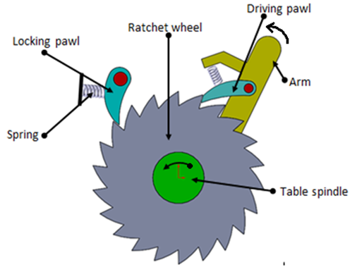
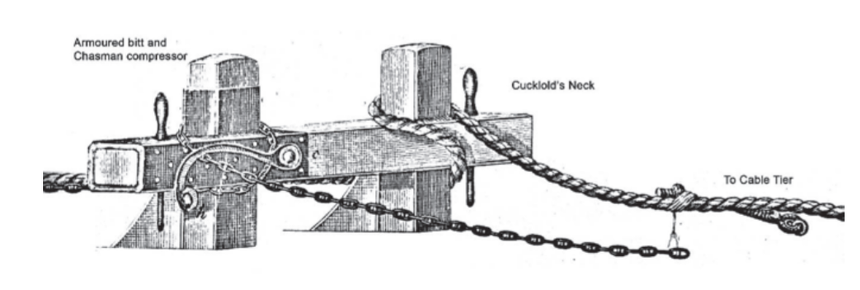
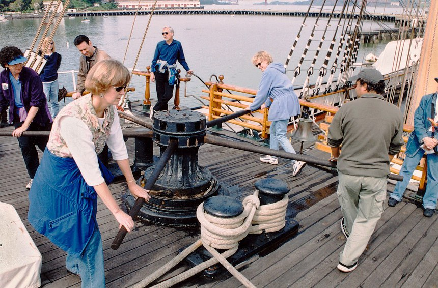
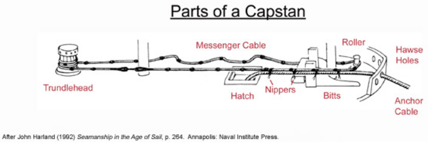

나폴레옹 시대 영국 전함의 전투 광경 - Lieutenant Hornblower 중에서 (7)
게시: 2019-03-25T06:13:47+09:00

(Pawl이란 그림 왼쪽 상단의 톱니멈춤쇠를 뜻합니다.)
수병들이 몸무게를 실어 캡스턴 손잡이를 밀자 캡스턴이 돌기 시작했고, 캡스턴이 느슨한 닻줄을 감아 올리면서 톱니멈춤쇠(pawl, 무거운 것을 감아올릴 때 역회전을 막기 위한 멈춤쇠 : 역주)가 재빨리 철컹철컹 소리를 냈다. 연결 밧줄(nippers)을 들고 메신저 밧줄(messenger : PS1 참조 : 역주) 옆에 선 소년들은 그에 보조를 맞추기 위해 부지런히 움직여야 했다. 그러더니 캡스턴이 도는 속도가 줄어들면서 톱니멈춤쇠가 철컹거리는 소리의 간격이 길어졌다. 철컹-철컹-철컹 더 천천히. 이제 장력을 받기 시작한 것이다. 닻줄이 팽팽해지면서 멈춤목(bitts : 닻줄이 갑자기 풀려나가는 것을 막기 위해 닻줄을 감고 풀 때 닻줄이 거치는 튼튼한 말뚝 같은 구조물)이 끼익끼익 소리를 냈다. 철컹-철컹. 그건 새 닻줄이었으므로 신축성이 있어 약간 늘어날 수도 있었다. 다음 순간 대포알이 날아드는 휭 소리가 났다. 큰 전함 전체의 온갖 곳을 내버려두고 왜 하필 이곳에 대포알이 날아든단 말인가 ? 나무 파편이 날아다니고 수병들이 쓰러졌다. 대포알은 수병들이 잔뜩 모인 한 가운데를 휩쓸고 지나갔다. 햇빛 아래 선명한 붉은 피가 솟구쳤다. 피가 낭자한 난장판 속에서 혼란에 빠진 수병들이 비틀비틀 물러나는 것은 이해가 갈 만한 일이긴 했다.

(Bitts 입니다. 저는 그냥 멈춤목이라고 해석했습니다.)
"각자 위치를 지켜라 !" 스미스가 소리를 질렀다. "너희 보이들 ! 저 부상병들을 옮겨. 캡스턴 바를 새로 가져와 ! 똑바로 해 !"
이런 무시무시한 난장판을 일으킨 대포알은 인간의 뼈와 살에 위력을 다 잃지는 않았다. 대포알은 더 날아가 함포의 포가 옆구리를 박살내고는 배의 측면에 박혔다. 그렇다고 인간의 피로 그 시뻘건 열기가 식은 것도 아니었다. 대포알이 박힌 곳에서 즉각 연기가 솟아오르기 시작했다. 부시는 손수 물통을 들고는 시뻘건 대포알에 물을 끼얹었다. 연기와 증기가 섞였고 대포알에 끼얹어진 물이 쉭쉭 소리를 냈다. 시뻘겋게 달아오른 24파운드 짜리 대포알을 물통 하나의 물로 식힐 수는 없었지만, 곧 그 위기를 해결하기 위해 화재 진압조가 달려왔다.
----------------------

(이건 물론 관광객들이 재미로 capstan을 돌리고 있는 장면입니다.)
PS1. 원래 이 부분의 원문은 아래와 같습니다. 짧고 평이한 단어들로만 조합된 문장입니다.
"The boys with the nippers at the messenger had to hurry to keep pace."
아마 이 문장만 접하신 모든 분들은 이걸 이렇게 해석하시게 될 것입니다.
"손에 뻰치를 들고 사환 옆에 서있던 소년들은 보조를 맞추기 위해 서둘러야 했다."
그러나 이 문장이 본문에서처럼 수병들이 캡스턴을 돌려서 닻줄을 감아들이고 있는 상황에서 나온 이야기라면 전혀 맥락에 맞지 않는 뜬금없는 문장이 되어버립니다. 실제로도 이런 식의 해석은 틀린 해석이 됩니다.
이 문장을 제대로 해석하시려면 어떤 단어들은 영어사전을 펼칠 때 간혹 나오는 "해사(海事)"라는 항목, 즉 해양/항해 관련 용어로 사용될 때는 전혀 다른 뜻을 가지게 된다는 것을 아셔야 합니다. 위에서 말하는 nipper나 messenger나, 모두 밧줄의 일종입니다. 차이가 있다면 messenger라는 것은 캡스턴에 직접 감기는 좀 더 굵은 밧줄이고, nipper라는 것은 닻줄, 즉 cable을 잠깐 messenger에 묶어 고정시켜주는 짧고 얇은 밧줄입니다. 이게 대체 무슨 소리인지 이해를 하시려면 아래 그림을 보시는 것이 좋습니다.

보통 생각하실 때 캡스턴이라는 것이 커다란 실패 같은 것이니, 그걸 돌리면 굵고 둥근 캡스턴 기둥 둘레에 닻줄이 감기면서 닻이 들어올려지는 것이라고 상상하실 것입니다. 그런데 그렇지 않았습니다. 원래 닻줄은 엄청나게 굵고 긴 물건입니다. 캡스턴 둘레에 몇 바퀴 겹쳐 감는다고 다 감길 정도의 길이가 아니지요. 캡스턴은 어디까지나 닻줄을 감아들이는 회전력을 제공할 뿐, 직접 그 둘레에 닻줄을 감지 않습니다. 캡스턴에 직접 감긴 것은 긴 루프로 된 메신저(messenger)라는 이름의 굵은 밧줄입니다. 캡스턴의 회전에 따라 이 메신저라는 이름의 긴 고리 형태의 밧줄이 따라 돌면서 진짜 닻줄을 끌어올립니다. 메신저가 돌면서 닻줄을 끌어올리려면 메신저에 닻줄을 고정시킬 무언가가 필요한데, 그것이 니퍼(nipper)라는 이름의 짧은 줄입니다. 잽싼 소년들이 니퍼라는 비교적 가는 줄을 들고 있다가 메신저가 회전하며 닻줄을 끌어올리면, 새로 끌어올려진 닻줄과 그에 맞닿은 메신저를 재빨리 니퍼로 단단히 묶어 고정하는 것입니다. 이렇게 메신저와 묶여 고정된 닻줄은 메신저에게 질질 끌려가다가 닻줄을 보관하는 맨 바닥 선창, 즉 cable tier로 통하는 햇치 통로(hatchway)에 도달하면 또 다시 재빨리 니퍼를 끊어 메신저와 분리됩니다. 그러니까 닻줄이 메신저와 니퍼로 묶여있는 시간은 닻줄이 닻줄 구멍(hawse hole)을 통해 들어왔다가 햇치 통로로 내려가기 바로 직전까지인 수m~십여m에 불과했습니다. 아마도 니퍼는 이렇게 재빨리 절단되어야 했기 때문에 니퍼(nipper, 절단기라는 뜻)라고 불렸나 봅니다.
소설 본문에서 수병들이 캡스턴을 힘차고 빠르게 돌려서 닻줄이 감기는 속도가 빨랐으니, 닻줄과 메신저를 니퍼로 묶었다가 다시 끊어내야 하는 속도도 덩달아 빨라야 했습니다. 그래서 소년들이 바삐 움직여야 했다는 소리가 나오는 것입니다.
하지만 이렇게 닻줄을 감는 작업을 할 때 가장 힘들고 고된 작업을 하는 사람은 니퍼를 손에 든 소년들도 아니었고, 캡스턴 바에 매달려 캡스턴을 열심히 돌리는 중노동을 하는 수병들도 아니었습니다. 바로 배의 맨 바닥 선창에서 닻줄을 가지런히 정리해야 했던 또 다른 일단의 수병들이었지요. 그들은 불빛도 거의 없는 깜깜한데다 쥐떼까지 득실거리는 cable tier에서 바닷물에 흠뻑 젖은 무겁고 굵은 닻줄을 그야말로 근육의 힘으로 움직여 정리해야 했습니다. 게다가 그 cable tier라는 곳은 선창 중에서도 가장 냄새나고 지저분한 곳이었습니다. 보통 닻을 던지는 곳은 항구였는데, 항구의 물 밑 바닥은 온갖 오물, 그러니까 주로 인간의 배설물로 인해 매우 지저분한 곳이었습니다. 그런 곳에 푹 절여진 채로 있다가 끌어올려진 닻줄에는 역시 온갖 오물이 잔뜩 묻은 채였고, 이런 닻줄은 제대로 씻을 기회도 없이 그대로 cable tier에 보관되었습니다. 거기서 뚝뚝 떨어진 오물 섞인 바닷물은 그대로 흘러내려 선창에 고였고, 그것이 그대로 bilge water, 즉 선창 오물이 되어 온 배에 고약한 냄새를 풍기는 주범이 되었습니다.
Source : The Sailor's Word-Book: An Alphabetical Digest of Nautical Terms by William Henry Smyth
The history of a ship, from her cradle to her grave by Ben (grandpa, pseud.)
https://en.wikipedia.org/wiki/Capstan_(nautical)
http://nautarch.tamu.edu/model/report2/
https://www.tandfonline.com/doi/pdf/10.1080/00253359.2013.767000